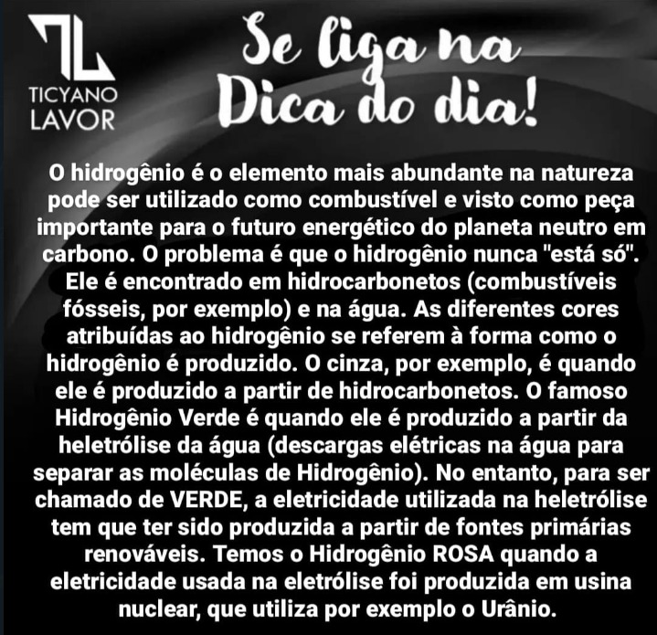
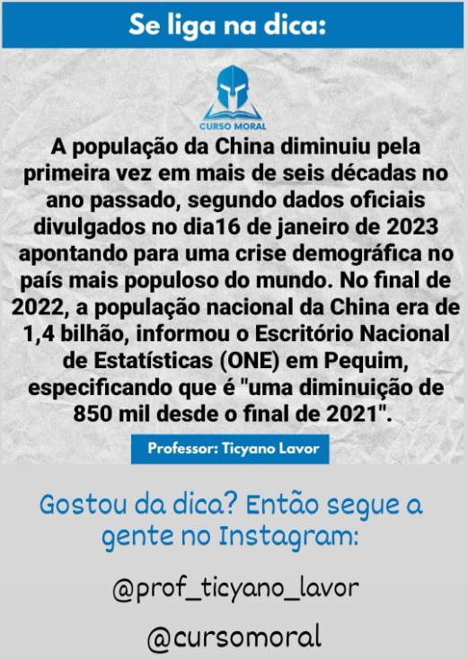

Introdução à Disciplina
🎥 01. Introdução à Disciplina
📰 G1
📰 Jovem Pan News
📰 BBC News
📰 CNN Brasil
📰 ONU News
📰 Agencia Brasil
No dia 24 de fevereiro de 2022
Os 2 maiores esportadores de trigo do mundo.
Foi declado a pandemia no dia 11 de março 2020
Foi identificada pela primeira vez em 31 de dezembro de 2019, na cidade de Wuhan, na província de Hubei.
Globalização
"Globalização é o nome atribuído ao fenômeno de integração do espaço mundial por meio das tecnologias da informação e da comunicação e também dos meios de transporte, que se modernizaram rapidamente e proporcionaram, além de maior dinamização dos territórios, aceleração e intensificação dos fluxos de capitais, mercadorias, informações e pessoas em todo o planeta. Esse processo é conhecido também como mundialização."
"A globalização é por vezes entendida como um processo que, de maneira metafórica, suprimiu as barreiras entre os territórios e criou um espaço global unificado, o que significa dizer que os fluxos acontecem agora em uma escala internacional.
Embora o fenômeno da globalização tenha se iniciado há mais tempo, a sua aceleração está diretamente associada ao advento do meio técnico-científico-informacional, que é marcado pela modernização das tecnologias da informação e da comunicação já existentes e surgimento de novas, bem como pela maior relação com a ciência, criando assim condições para, dentre outros fatores, maior difusão do capital e das empresas pelo espaço mundial. Essa é uma das principais características da atual fase da globalização."
"Outros aspectos importantes que caracterizam a globalização são:
avanço do capitalismo monopolista (ou financeiro) e maior protagonismo do mercado no cenário internacional;
internacionalização da produção, caracterizada pela desarticulação vertical das empresas e consequente dispersão das etapas das cadeias produtivas por diversos países e cidades, que são selecionados de acordo com as vantagens locacionais que oferecem;
surgimento e ampla atuação das empresas transnacionais por todo o globo, incluindo países até então com baixo nível de industrialização;
aumento dos fluxos de mercadorias e de capital (dinheiro) pelo mundo;
padronização técnica da produção e também do consumo, o que é fruto do papel dominante das empresas transnacionais;
intensificação do uso da tecnologia nos processos produtivos, tanto na indústria quanto no campo. No meio rural, o processo de modernização ficou conhecido como Revolução Verde;
advento de novos blocos econômicos e maior atuação das organizações internacionais;
ampliação do fluxo de informações e difusão de maneira ágil e em tempo real em quase todos os locais do planeta;
modernização das telecomunicações e surgimento de novos meios, como a internet;
maior circulação de pessoas em escala global, com o crescimento das migrações internacionais e das atividades turísticas;
criação de novos vínculos territoriais e adensamento das redes geográficas.
Importante: A globalização, a despeito de seu nome, não abrange de forma homogênea todos os países e lugares do planeta Terra, difundindo-se de forma desigual pelos territórios."
"A expansão do capitalismo moderno pelo mundo deu início à globalização, mas esse fenômeno não ficou restrito somente a essa esfera. Como foi mencionado, o aperfeiçoamento técnico da comunicação e dos transportes propiciou novos vínculos territoriais, permitindo-nos distinguir, para fins metodológicos, ao menos dois diferentes tipos de globalização."
"A globalização econômica refere-se ao processo de internacionalização da economia, que é marcado pela consolidação do capitalismo monopolista (ou financeiro) como novo modelo de acumulação, com grande importância do mercado no âmbito da tomada de decisões.
A globalização econômica é caracterizada pela massiva presença das empresas transnacionais pelo globo, pela padronização da produção e sobretudo pela fragmentação das cadeias produtivas, derivada da modernização tecnológica das comunicações.
Está inserida também no escopo da globalização econômica a reestruturação produtiva dos territórios em escala global, que tem como resultado a instalação de uma nova divisão internacional do trabalho (DIT)."
"A globalização cultural, chamada também de globalização social, corresponde à difusão de elementos culturais em escala planetária, da mesma forma como pode ser relacionada ao aumento da circulação de pessoas pelo espaço mundial e nas trocas socioculturais e relações que são estabelecidas nesses deslocamentos. Está intimamente ligada aos meios de comunicação e ao desenvolvimento de novas tecnologias, como a internet, que ampliam a escala das conexões e da difusão de informações."
"A origem da globalização é um tema bastante debatido entre pesquisadores do assunto. Existem aqueles que determinam como marco inicial desse processo o advento do sistema de acumulação capitalista no mundo, enquanto uma das teses mais aceitas é a de que a globalização se iniciou com as Grandes Navegações dos séculos XV e XVI.
As Grandes Navegações representaram um momento de consolidação do comércio internacional e expansão dos domínios territoriais dos países europeus à época considerados centrais, que estavam em busca de novas áreas fornecedoras de matéria-prima e mão de obra. Esse período foi marcado pelo estabelecimento de novas rotas comerciais no espaço mundial e intensa circulação de mercadorias e pessoas entre países de diferentes continentes. As descobertas cartográficas e o desenvolvimento de novas técnicas de navegação estão nas origens desse acontecimento.
Gradativamente, as transformações no sistema econômico internacional e o aperfeiçoamento das comunicações e dos transportes viabilizaram a evolução desse processo, o qual pode ser compreendido por meio da sua divisão em diferentes fases."
"Primeira fase da globalização
Corresponde ao período das Grandes Navegações, com o início do processo de integração do espaço econômico internacional. Faz parte também dessa fase a Primeira Revolução Industrial, que data do século XVIII. Além dos avanços tecnológicos no setor produtivo e dos transportes e da ampliação da escala de produção, ela consolidou o capitalismo enquanto sistema econômico internacional. Outro aspecto importante que se destacou na Primeira Revolução Industrial foi a invenção do telégrafo, que revolucionou a forma de comunicação no período
Segunda fase da globalização
Compreende o período que vai da segunda metade do século XIX até o final da Segunda Guerra Mundial. Durante essa fase, os países europeus expandiram seus domínios coloniais para o continente africano e para o continente asiático motivados também pela busca por matérias-primas mais baratas. Ocorreu um substancial avanço dos meios de comunicação e de transportes, assim como dos processos de urbanização e industrialização.
Terceira fase da globalização
Abrange o final da Segunda Guerra Mundial, em 1945, e estende-se até o encerramento da Guerra Fria e a queda do Muro de Berlim, que data de 1989. Um dos principais acontecimentos dessa fase, que deu respaldo para a atual fase da globalização, foi a Terceira Revolução Industrial, responsável pelas inovações tecnológicas e científicas que surgiram a partir da década de 1970 e que são características do meio técnico-científico-informacional. Foi durante essa fase também que se consolidou o capitalismo financeiro e cresceu a presença de empresas transnacionais pelo mundo, dois dos principais signos da globalização contemporânea.
Quarta fase da globalização"
"Teve início a partir da década de 1990 e corresponde ao atual estágio da globalização. É marcada pela consolidação do processo de industrialização em países emergentes, com destaque para a região do Sudeste Asiático, e também da nova divisão internacional do trabalho. Os ideais neoliberalistas avançaram para os países emergentes e subdesenvolvidos, especialmente na América Latina. Novas redes geográficas surgiram nesse período, facilitadas pelo desenvolvimento de novas tecnologias da informação das quais se destacam a internet e as redes sociais.
Interessante: O termo globalização foi cunhado e passou a ser amplamente utilizado durante a sua terceira fase, mais especificamente a partir da década de 1980."
→ Vantagens da globalização
A propagação das informações e do conhecimento atingiu, no atual período técnico, uma escala sem precedentes na história, o que pode ser considerado um dos aspectos positivos da globalização. Com a ideia de superação das barreiras físicas alcançada pelos novos meios de comunicação e de transporte, é possível ter conhecimento em tempo real do que acontece em outros territórios localizados a centenas de milhares de quilômetros, bem como estabelecer canais de contato com pessoas em todos os lugares do mundo.
O contato com novas tradições culturais foi ampliado, o que foi facilitado também pela difusão de elementos por meio de músicas, filmes, séries, livros e outras produções audiovisuais de várias regiões distintas do globo.
As próprias inovações no campo das ciências e da tecnologia podem ser apontadas como vantagens do processo de globalização, assim como a circulação de mercadorias com a ampliação do alcance dos mercados internacionais, o que significa maior variedade de produtos aos consumidores finais. Ainda no campo econômico, a intensificação dos fluxos de capital na forma de investimentos estrangeiros auxiliaram o processo de industrialização de determinados países.
→ Desvantagens da globalização
Apesar dos pontos positivos, a globalização apresenta também uma série de aspectos negativos, o que levou autores como Milton Santos a falarem em uma faceta perversa da globalização.
Um dos seus pontos negativos é a padronização do consumo, resultante da dispersão das transnacionais por todas ou quase todas as áreas do planeta, bem como da formação de grandes conglomerados (oligopólios) que acabam por se tornar dominantes na produção de um bem (alimento, produto de beleza, aparelho eletrônico, carro) ou na prestação de serviços (bancários, comunicações etc.).
Nota-se ainda que a globalização não é um processo homogêneo e não incorpora todos os territórios da mesma forma e intensidade em suas mais diferentes dimensões — econômica, cultural ou informacional. Nesse sentido, há um reforço das desigualdades socieconômicas e o aprofundamento de problemas como a concentração de renda, a pobreza e o desemprego, por exemplo.
Além disso, culturas já antes em uma posição hegemônica, que são aquelas dos países desenvolvidos, obtêm maior alcance, o que conduz a um processo de homogeneização cultural e menor protagonismo de costumes e tradições locais."
"
Da mesma maneira como o processo de globalização atingiu todas as dimensões que compõem a sociedade, os seus efeitos repercutiram de forma abrangente nas mais distintas escalas territoriais e esferas socioeconômicas. Listamos abaixo quais foram as principais consequências do fenômeno da globalização:
difusão das empresas transnacionais pelo espaço global;
reconfiguração da divisão internacional do trabalho, caracterizada agora pela presença de países desenvolvidos ou países centrais e também de países emergentes e subdesenvolvidos, que constituem a periferia econômica;
surgimento de novos organismos internacionais, principalmente após o fim da Segunda Guerra Mundial, e de blocos econômicos que atuam na regulamentação política e econômica em escala internacional e na intermediação de conflitos. São exemplos dessas uniões o Banco Mundial, o Fundo Monetário Internacional (FMI), a Organização Mundial do Comércio (OMC), o Mercosul e muitas outras;
ampliação da competitividade entre lugares e também entre empresas;
transformações no papel do Estado diante da maior atuação do mercado;
intensificação dos fluxos de investimentos estrangeiros entre empresas e territórios;
maior integração entre os lugares e criação de novas redes geográficas."
"O processo de globalização resultou em impactos diretos ao meio ambiente. Embora tenha havido um grande desenvolvimento dos transportes nesse período, o uso indiscriminado de combustíveis fósseis ainda é realizado para a geração de energia nos motores à combustão, lançando volumes expressivos de gases poluentes na atmosfera. Mais recentemente, veículos elétricos têm sido desenvolvidos como uma alternativa, mas o seu uso ainda é bastante restrito e de elevado custo.
A escala de produção e a crescente demanda por produtos dos mais variados tipos intensificou a busca por recursos naturais e matérias-primas, sem contar, é claro, com o aumento na produção de alimentos e commodities agrícolas que são responsáveis pela abertura de novas áreas de cultivo e pastagem. Como consequência desses processos, podemos citar: desmatamento, poluição de mananciais, escassez de recursos, contaminação do solo e muitos outros efeitos negativos para o ecossistema.
Além disso, o aumento da produtividade e do consumo gerou ampliação da produção de lixo em escala global na mesma proporção, o que gera uma série de problemas para os ambientes, tanto terrestres quanto marítimos, como é o caso das toneladas de plástico que são descartadas anualmente nos oceanos.
"Globalização no Brasil
Os efeitos da globalização foram sentidos no Brasil de maneira mais intensa a partir da segunda metade do século XX, quando se registrou um maior ingresso de empresas multinacionais no território brasileiro. Esse período foi marcado ainda pela modernização do campo, com a absorção dos signos produzidos no âmbito da Revolução Verde e com o crescimento dos grandes centros urbanos, decorrentes tanto da mecanização do trabalho rural quanto da industrialização, que se intensificou.
A década de 1990 marcou a internacionalização da produção agrícola brasileira, o grande ingresso de produtos estrangeiros no território e a adoção das medidas neoliberais conforme as proposições do Consenso de Washington, com maior abertura da economia nacional aos investimentos estrangeiros e um amplo processo de privatização de empresas até então de administração estatal.
Dessa forma, podemos dizer que a integração do Brasil ao espaço econômico mundial aconteceu de maneira mais robusta a partir do final do século XX. Internamente, entretanto, a globalização produziu e reforçou uma série de contradições socioespaciais e econômicas no território brasileiro."
Pandemia
👉 Da descoberta de uma nova doença até a pandemia:
a evolução da Covid-19 registrada nos tuítes da OMS
🤓 Publicações da Organização Mundial da Saúde (OMS) apontam o avanço do número de casos da Covid-19 em três meses desde o surgimento do vírus.
A primeira vez que a Organização Mundial da Saúde (OMS) foi informada sobre o vírus Sars-Cov-2, ele não tinha ainda um nome definido. Em 9 de janeiro de 2020, a organização publicou um tuíte sobre o surgimento de um número elevado de casos de pneumonia em uma cidade na China.
Depois disso, a situação começou a ser acompanhada de perto pela organização, que utilizou a rede social como meio de divulgação das principais informações sobre o novo coronavírus.
O G1 reuniu uma cronologia dos comunicados divulgados pela a OMS que mostra o avanço da Covid-19 pelo mundo e como o vírus passou de um problema regional para uma pandemia.
📌 em janeiro a OMS já tinha informado que todos os países deveriam se preparar para monitorar e realizar testes em casos suspeitos
📌 o número de casos passou a ter rápida elevação na segunda quinzena de fevereiro
📌 o primeiro caso registrado nos Estados Unidos foi em janeiro. Somente em março o país adotou medidas drásti-cas para conter a disseminação do vírus
📌 o novo coronavírus foi definido como pandemia no início de março
📌 em março, o número de infectados saltou de 100 para 800 mil, ultrapassando 1 milhão em 2 de abril
Até esta sexta-feira (3), os Estados Unidos, país com mais casos da doença, registravam mais de 6 mil mortes e ao menos 245 mil confirmações de infecção pelo novo coronavírus, segundo a Universidade Johns Hopkins. A China, primeiro epicentro do vírus, registrava 82.432 casos. No mundo todo, o total de casos já ultrapassou 1 milhão.
Só entre quarta (1º) e quinta-feira, os Estados Unidos registraram 1.169 mortes em 24 horas, também de acordo com a Johns Hopkins. O número é o mais alto do mundo para um dia desde o início da pandemia.
A Itália, país com maior número de mortos, ao menos 13.915 nesta sexta, deverá prorrogar pelo menos até 2 de maio o período de confinamento.
👉 Cronologia em posts
🤓 Em 4 de janeiro de 2019, a OMS relatou que foi procurada por autoridades chinesas para informar uma série de casos de pneumonia, até então sem mortes, na cidade de Wuhan, na província de Hubei.
No dia seguinte, 5 de janeiro, a Organização informou que teria sido procurada pela China no dia 31 de dezembro com os relatos. A pneumonia, ainda sem causa, tinha registrado 44 casos: 11 pacientes em estado grave, enquanto os 33 restantes estavam em condição estável.
Ainda no mesmo dia, a OMS informou que não tinha nenhuma recomendação específica para evitar viagens por conta da pneumonia. Nem para viajantes que estavam em território chinês.
Em 9 de janeiro, após investigações das autoridades chinesas, a OMS informou que os casos de pneumonia relata-dos em Wuhan se tratavam de um novo vírus, da família coronavírus, que causa doenças que variam de um resfriado comum a doenças mais graves, como a Síndrome Respiratória do Oriente Médio (MERS) e a Síndrome Respiratória Aguda Grave (SARS).
Neste momento, a OMS passou a recomendar medidas de higiene para evitar a transmissão do novo coronavírus. As recomendações incluíam lavar as mãos, cobrir a boca ou o nariz ao tossir ou espirrar, cozinhar bem alimentos como carnes e ovos antes de consumir, evitar contato com quaisquer pessoas com doenças respiratórias e com animais sel-vagens. A organização ainda não tinha emitido nenhum comunicado para a restrição de viagens.
Em 10 de janeiro a OMS informou que não existia nenhuma recomendação de restrição de viagem para a China.
Em 11 de janeiro a OMS já tinha emitido um comunicado com recomendações para outros países caso o vírus se es-palhasse pelo mundo. O comunicado dizia que os países deveriam monitorar as pessoas doentes, realizar amostras de testes, tratar pacientes que apresentassem sintomas, controlar infecções em centros de saúde, manter os suprimentos certos e informar ao público sobre o vírus.
Em 12 de janeiro, a OMS informou que não existia ainda nenhuma evidência clara que comprovasse a transmissão de humano para humano.
Em 16 de janeiro, o Japão e a Tailândia teriam registrado os primeiros casos da doença fora do território chinês, de pessoas que haviam viajado a Wuhan. Até aquele momento, no entanto, a OMS não tinha nenhuma medida de restrição de viagens.
Em 19 de janeiro, a OMS informou que o índice de transmissão de pessoa para pessoa era baixo, e que um animal era a fonte primária de transmissão.
Em 21 de janeiro foi registrado o primeiro caso do novo coronavírus nos Estados Unidos, em um viajante que teria re-tornado recentemente da China.
Em 23 de janeiro, a OMS informou que o novo coronavírus era uma emergência de saúde na China e, por enquanto, não era considerada uma emergência internacional. Até o dia 25 do mesmo mês, a organização informou que o nível de contaminação mundial era moderado.
Em 30 de janeiro, após o crescimento do número de países afetados e a transmissão comunitária do novo vírus, a OMS declarou a situação como emergência de saúde pública de preocupação internacional sobre o surto global.
Em 24 de fevereiro, a OMS informou que o número de mortes fora da China, tinha chegado a 24. E o número de casos no resto do mundo era 2.074, em 28 países. O aumento repentino de casos na Itália, na Coreia do Sul e no Irã era consi-derado tema de "profunda preocupação".
Até aquele momento, a Organização não tinha definido o novo coronavírus como uma pandemia, por não apresentar uma disseminação global não contida.
Em 28 de fevereiro, 49 países já tinham registrado casos da Covid-19. Naquele dia, a OMS informou que a situação era de epidemias relacionadas da Covid-19 em vários países, mas a maioria dos casos era atribuída a contato com gru-pos de risco, que até aquele momento eram pessoas que visitaram os países por onde o vírus foi se espalhando. Ainda não havia evidência de casos de transmissão comunitária.
A OMS mantinha as mesmas recomendações de higiene para evitar o risco de transmissão. No entanto, no mesmo dia foram divulgados novos comunicados referentes ao novo coronavírus:
📌 pessoas que apresentassem sintomas deveriam evitar viagens
📌 grupos de riscos (pessoas com mais de 60 anos ou com problemas respiratórios e doenças crônicas) deveriam evitar aglomerações
📌 pessoas doentes deveriam ficar em casa, e comer e dormir separadamente da sua família, além de usar utensílios e talheres diferentes para comer
📌 em caso de falta de ar, a recomendação era para procurar um médico imediatamente
Em 9 de março, a OMS dividiu os países em três categorias e classificou a Covid-19 como uma epidemia com características desiguais globalmente. Todos os países foram recomendados a testar e isolar todos os casos suspeitos do novo vírus.
No entanto, os países que apresentassem transmissões comunitárias deveriam tomar medidas mais drásticas, como fechar escolas, cancelar eventos e reuniões e evitar aglomeração de pessoas.
Após 114 países terem sido atingidos pela doença, em 11 de março a OMS optou por declarar o novo coronavírus como uma pandemia. Nessa data, a principal recomendação da organização era que os países realizassem testes em massa e definissem medidas de isolamento para evitar o crescimento de transmissão.
Em 13 de março, com o crescimento do número de casos na Europa, em grande parte na Itália, a OMS decretou o continente europeu como o epicentro do novo coronavírus. A organização manteve a posição de que todos os países devem realizar testes em massa, isolar infectados e tomar medidas de distanciamento social.
Em 16 de março, a OMS ressaltou a importância do distanciamento social que foi adotado por vários países como medida de precaução. A organização voltou a reforçar a importância da realização de testes em massa.
No dia 23 de março foram confirmados mais de 300 mil casos do novo coronavírus em todo o mundo.
Em 25 de março, a pandemia teve um crescimento mais acelerado no número de casos confirmados da Covid-19.
Os primeiros 100 mil casos foram registrados ao longo dos 67 dias desde o início da pandemia. A partir disso, o número chegou em 200 mil casos após 11 dias. Três dias depois o número chegou em 300 mil, e chegou a 400 mil apenas dois dias depois.
De acordo com a Universidade Johns Hopkings, em atualização das 9h21 desta sexta-feira (3), o número de casos no mundo chegou a 1.039.166. São mais de 54,3 mil mortes e mais de 218,8 mil pessoas recuperadas da doença desde o início da pandemia.
👉 CORONAVÍRUS: VEJA A CRONOLOGIA DA DOENÇA NO BRASIL
📌 Relembre as medidas tomadas pelos governos federal e estaduais contra a evolução do vírus e pela retomada da economia, além dos casos dos mais jovens a morrerem no país. POR G1 - 06/04/2020
O Brasil ultrapassou nesta segunda-feira (6), 20 dias após ser confirmada em São Paulo a primeira morte de um infectado pelo novo coronavírus (Sars-Cov-2), a marca de 500 mortes causadas pela Covid-19. Naquele dia, eram 301 casos da doença confirmados no país. Nesta segunda-feira, o total de casos já passava de 11,5 mil.
O período foi marcado por medidas dos governos estaduais para evitar aglomerações e promover o distanciamento social. No governo federal, foram tomadas ações para incentivar a economia em meio ao combate ao vírus.
As últimas semanas, no entanto, também tiveram declarações e atitudes do presidente da República, Jair Bolsonaro, que foram na contramão das ações tomadas ao redor do mundo contra o coronavírus e que contrariam recomendações das autoridades nacionais e internacionais de saúde.
📌 06.02: lei da quarentena
Antes de haver casos da doença no Brasil, o presidente Jair Bolsonaro sancionou a lei que trata as normas da quarentena no país e medidas de combate ao coronavírus. A proposta foi enviada pelo Executivo ao Congresso e aprovada na mesma semana como forma de estabelecer regras para a chegada no país dos brasileiros que estavam em Wuhan - cidade chinesa epicentro da pandemia - e foram trazidos ao Brasil pelo governo brasileiro.
📌 09.02: chegada de repatriados
Chegaram ao Brasil dois aviões da Força Aérea Brasileira com os repatriados que estavam em Wuhan e deixaram a cidade da China em meio ao período de restrição de circulação no local. Eles precisaram passar 18 dias em quarentena na Base Aérea de Anápolis. Eram 34 passageiros, entre brasileiros e cônjuges chineses.
📌 26.02: 1º caso no Brasil
O Ministério da Saúde informou ter confirmado o primeiro caso positivo de coronavírus no Brasil. A confirmação também era a primeira da doença na América Latina. O homem de 61 anos que mora em São Paulo tinha chegado de viagem à Itália, país que no início de abril tinha o maior número de mortos pela doença - mais de 15,8 mil. O homem estava assintomático e foi deixado em quarentena domiciliar. Outras 30 pessoas que tiveram contato com ele ficaram em observação, segundo o ministério.
📌 11.03: aulas e serviços suspensos
O Distrito Federal foi a primeira unidade da federação a estabelecer medidas de distanciamento social. Por meio de um decreto, o governador Ibaneis Rocha (MDB) suspendeu as aulas na rede pública e privada por cinco dias, além de eventos que exigissem licenças do governo do Distrito Federal. Dias depois foram suspensas também atividades de atendimento ao público em comércios, medida que incluiu restaurantes, bares, lojas, salões de beleza, entre outros.
Ações similares foram tomadas nos dias seguintes em estados como São Paulo, em 16 de março, e Rio de Janeiro, em 17 de março. Os demais estados também passaram a tomar medidas de quarentena.
📌 12.03: integrantes do governo infectados
O secretário de Comunicação Social da Presidência da República, Fábio Wanjgarten, testou positivo para o coronavírus. Ele havia acabado de voltar de uma viagem aos Estados Unidos junto com o presidente Jair Bolsonaro e comitiva presidencial.
Bolsonaro chegou a fazer dois testes para a doença. Segundo o presidente, os dois testes deram negativos. Mais de 20 pessoas que faziam parte da comitiva ou tiveram contato com Bolsonaro durante a viagem contraíram a doença, como os ministros Augusto Heleno (Gabinete de Segurança Institucional) e Bento Albuquerque (Minas e Energia), o senador Nelsinho Trad (PSD-MS) e o prefeito de Miami, Francis Suarez.
📌 17.03: 1ª morte no Brasil
O Brasil teve a primeira confirmação de morte pela Covid-19 em São Paulo. O homem de 62 anos estava internado em um hospital particular e tinha histórico de diabetes, hipertensão e hiperplasia prostática — um aumento benigno da próstata que não é uma doença, mas uma condição comum em homens mais velhos e que pode causar infecções urinárias.
📌 22.03: MP flexibiliza regras trabalhistas
O presidente Jair Bolsonaro editou uma medida provisória que flexibiliza as regras trabalhistas. Inicialmente, a proposta permitia a suspensão de contratos de trabalho por até 4 meses, mas o presidente retirou artigo que tratava desse assunto após receber críticas. Permaneceram as novas normas que tratam, por exemplo, de teletrabalho, férias individuais e coletivas e banco de horas.
📌 24.03: Bolsonaro pede volta à normalidade
O presidente Jair Bolsonaro fez um pronunciamento na TV no qual pediu 'volta à normalidade' e o fim do 'confinamento em massa". A declaração contrariou o que especialistas e autoridades sanitárias do Brasil e do mundo vêm pregando como forma de evitar que o novo coronavírus se espalhe, o isolamento e o distanciamento social.
Na fala, o presidente também culpou os meios de comunicação por espalharem, segundo ele, uma sensação de "pavor". O pronunciamento foi duramente criticado por governadores, parlamentares e especialistas da área de Saúde. O Ministério da Saúde, que já vinha recomendando o distanciamento social, não comentou.
📌 5.03: governadores criticam Bolsonaro
Após pronunciamento de Bolsonaro contra medidas de isolamento, 25 dos 27 governadores afirmaram que manteriam as iniciativas de quarentena já tomadas para combater o coronavírus.
📌 26.03: cidades vazias após um mês da doença
No último dia 26, várias cidades do país estavam com ruas vazias em meio a medidas de quarentena anunciadas pelos governos estaduais.
Naquela data, um dia após completar um mês desde que a primeira morte tinha sido registrada no Brasil, o país tinha mais de 60 mortos pela doença. O G1 comparou a situação brasileira à época com a de outros países largamente afetados: China, Itália, Coreia do Sul e Estados Unidos.
📌 28.03: mais de 100 mortos
No último dia 28, o total de mortos no país pela Covid-19 já era superior a 100, chegando a 113, segundo as secretarias estaduais de Saúde. O número foi alcançado 11 dias após a primeira morte pela doença no Brasil.
📌 30.03: Força Nacional na Saúde
Uma portaria assinada pelo ministro da Justiça e Segurança Pública, Sérgio Moro, autorizou o uso da Força Nacional para dar apoio ao Ministério da Saúde nas ações de combate ao novo coronavírus. A medida garante, por exemplo, o auxílio para funcionamento de hospitais e controle sanitário, além de "aplicação das medidas coercitivas [com efeito de reprimir]" para, por exemplo, garantir a realização de exames médicos e testes laboratoriais obrigatórios.
📌 31.03: morre homem aos 23 anos
O gastrólogo Matheus Aciole, de 23 anos, teve a confirmação da morte por coronavírus em 17 de março. Até então, ele era a pessoas mais jovem a morrer pelo vírus no país. Ele era morador de Natal e tinha obesidade, que pode estar associada a quadros casos graves da doença, segundo aponta pesquisa do Reino Unido.
📌 01.04 - MP da redução salarial
Entrou em vigor em 1º de abril a medida provisória (MP) que estabelece o Programa Emergencial de Manutenção do Emprego e da Renda. A MP permite a suspensão de contratos de trabalho ou a redução salarial e de jornada para reduzir a folha de pagamentos e evitar demissões em massa durante a crise do novo coronavírus.
📌 02.04 - Auxílio de R$ 600
Foi publicada no "Diário Oficial da União" a lei que cria um auxílio de R$ 600 mensais, por três meses, a trabalhadores informais, como forma de conter a crise econômica causada pelo novo coronavírus. Bolsonaro informou que o auxílio deverá beneficiar 54 milhões de pessoas, com custo de R$ 98 bilhões.
📌 06.04: morrem adolescente e bebê
Após a morte de um rapaz de 23 anos, um adolescente de 15 anos se tornou o mais jovem a morrer após contrair coronavírus no Brasil. Ele era morador de São Lourenço da Mata, no Grande Recife, e morreu em 27 de março, após uma semana de internação tendo sintomas como febre, tosse e dificuldade de respirar. O resultado do exame para a Covid-19 só saiu no domingo (5), e a divulgação do caso saiu em boletim da Secretaria Estadual de Saúde desta segunda.
Horas após a divulgação da morte do adolescente, foi confirmada a morte de um bebê de 3 meses no Ceará. A criança havia nascido com Síndrome de Bartter, uma alteração nos rins que afeta a taxa de potássio no sangue.
👉 POR QUE O CORONAVÍRUS AGORA SE CHAMA COVID-19 E COMO ESSES NOMES SÃO CRIADOS?
A Organização Mundial da Saúde (OMS) anunciou que o nome oficial da doença causada pelo novo coronavírus passará a ser Covid-19.
"Agora temos um nome para a doença e é Covid-19", disse o chefe da OMS, TedrosAdhanomGhebreyesus, a repórte-res em Genebra.
O Dr. Ghebreyesus pediu ao mundo que lute contra o novo vírus da maneira mais agressiva possível.
A palavra coronavírus refere-se ao grupo ao qual o vírus pertence, e não à última cepa.O vírus em si foi designado como SARS-CoV-2 pelo Comitê Internacional de Taxonomia de Vírus.
Os pesquisadores vêm clamando por um nome oficial para evitar confusão e estigmatização de qualquer grupo ou país.
"Tivemos que encontrar um nome que não se referisse a uma localização geográfica, a um animal, a um indivíduo ou a grupo de pessoas, e que também seja pronunciável e relacionado à doença", explicou o chefe da OMS.
"Ter um nome é importante para impedir o uso de outros nomes que podem ser imprecisos ou estigmatizantes. Tam-bém nos fornece um padrão a ser usado em futuros surtos de coronavírus."
O novo nome é retirado das palavras "corona", "vírus" e "doença", com 2019 representando o ano em que surgiu (o surto foi relatado à OMS em 31 de dezembro).
Atualmente, existem mais de 42.200 casos confirmados em toda a China. O número de mortes ultrapassou o da epi-demia de Sars em 2002-2003.
Na segunda-feira, 103 pessoas morreram apenas na província de Hubei, um recorde diário, e o número nacional de mortes no país era de 1.016. No entanto, o número de novas infecções em todo o país caiu quase 20% em relação ao dia anterior, de 3.062 para 2.478.
DICAS
👉 DICA 01 - Único caso que resultou em condenação por genocídio no Brasil
O atual subprocurador da República, Luciano Mariz Maia, atuou naquele que é considerado o único caso que resultou em condenação por genocídio no Brasil.
Foi em 1995, quando garimpeiros foram condenados por assassinarem, em 23 de julho de 1992, a tiros e golpes de facão, 12 indígenas yanomamis.
Em 2023, Luciano Mariz defende a instauração de inquérito pela Polícia Federal para apurar um possível novo genocídio do povo yanomami.
👉 DICA 02 - O hidrogênio
O hidrogênio é o elemento mais abundante na natureza pode ser utilizado como combustível e visto como peça importante para o futuro energético do planeta neutro em carbono. O problema é que o hidrogênio nunca "está só". Ele é encontrado em hidrocarbonetos (combustíveis fósseis, por exemplo) e na água. As diferentes cores atribuídas ao hidrogênio se referem à forma como o hidrogênio é produzido. O cinza, por exemplo, é quando ele é produzido a partir de hidrocarbonetos. O famoso Hidrogênio Verde é quando ele é produzido a partir da heletrólise da água (descagas elétricas na água para separar as moléculas de Hidrogênio). No entanto, para ser chamado de VERDE, a eletricidade utilizada na heletrólise tem que ter sido produzida a partir de fontes primárias renováveis. Temos o Hidrogênio ROSA quando a eletricidade usada na eletrólise foi produzida em usina nuclear, que utiliza por exemplo o Urânio.

👉 DICA 03 - O Petróleo vai acabar um dia?
É aquela história: a Idade da Pedra não acabou por falta de pedra. Se você somar as reservas de cada país produtor, verá que existe 1,5 trilhão de barris ainda no subsolo. O consumo de petróleo nos últimos anos ficou, mais ou menos, em 35 bilhões de barris por ano. Se essa média continuar, teríamos petróleo só para os próximos 43 anos.
Mas tem um porém: o petróleo não se resume apenas às reservas oficiais. Elas só contabilizam aquilo que dá para tirar do subsolo com alguma facilidade, usando as tecnologias de hoje, e cuja extração seria lucrativa.
Há ainda o que a Agência Internacional de Energia chama de “petróleo tecnicamente recuperável”. Esse material está em lugares de acesso mais difícil extraí-lo dali sairia tão caro que seria impossível lucrar com a operação. Essa quantidade, então, nem entra nas contas.
Mas o xis da questão é outro. A demanda pelo petróleo tende a diminuir, agora que EUA, China e União Europeia decidiram se tornar "neutras em carbono" ou seja, só emitir o que der para sugar de volta da atmosfera (plantando árvores, por exemplo). A China promete sua neutralidade em CO2 para 2060. EUA e União Europeia, para 2050.
E o único caminho para isso é, de fato, dar um jeito de tornar o petróleo obsoleto. Dois terços do petróleo vão para o setor de transportes a gasolina dos carros, o diesel dos caminhões, o querosene da aviação (o resto vira matéria-prima para plásticos, asfalto, remédios). Bom, os carros e caminhões já caminham para a eletrificação. Na marra, inclusive: a UE pretende proibir a fabricação de motores a combustão interna até 2035.
Na aviação é mais difícil. As baterias são pesadas demais. E o hidrogênio, um combustível limpo e leve, ocupa espaço demais (ele não tem a densidade energética do querosene). Assim, o mais provável é que a última gota de petróleo queimada pela humanidade estará dentro do motor de um avião.
👉 DICA 04 - População da China
A população da China diminuiu pela primeira vez em mais de seis décadas no ano passado, segundo dados oficiais divulgados no dia 16 de janeiro de 2023 apontando para uma crise demográfica no país mais populoso do mundo. No final de 2022, a populaçao nacional da China era de 1.4 bilhão, informou o Escritório Nacional e Estatística (ONE) em Pequim, especificando que é "uma diminuição de 850 mil desde o final de 2021".

👉 DICA 05 - A tecnologia 5G
A tecnologia 5G é um novo padrão para dispositivos móveis que trará mudanças tanto quantitativas quanto qualitativas na forma como as pessoas utilizam esses aparelhos, permitindo novas funcionalidades e um incremento significativo do número e da velocidade das conexões. No Brasil, a primeira cidade a receber a tecnologia da internet 5G foi Brasília.

👉 DICA 06 - Índice de Desenvolvimento Humano do Brasil
De acordo com o relatório divulgado no dia 08 de setembro de 2022 pelo PNUD – Programa das Nações Unidas para o Desenvolvimento, o Índice de Desenvolvimento Humano do Brasil é 0,754.
👉 QUEM SÃO OS YANOMAMI E QUAL É O TERRITÓRIO QUE ELES OCUPAM NA AMAZÔNIA?
Os yanomami formam um coletivo de caçadores-agricultores cujo contato com grupos não-indígenas é relativamente recente, como explica o Instituto Socioambiental (ISA), organização da sociedade civil que atua na defesa da diversidade socioambiental brasileira.
Dos mais de 180 povos indígenas que habitam a floresta amazônica, os yanomami mantinham contato apenas com outros indígenas vizinhos até o fim do século 19. No Brasil, os primeiros encontros diretos de yanomamis com não indígenas ocorreram entre as décadas de 1910 e 1940.
Dados de 2014 do relatório Território e comunidades Yanomami Brasil-Venezuela, realizado pelo ISA e organizações indígenas como a Hutukara Associação Yanomami, indicam que existam aproximadamente 665 aldeias yanomamis entre o Brasil e a Venezuela.
Essas comunidades fazem parte de um conjunto cultural e linguístico composto de, pelo menos, quatro subgrupos adjacentes que falam línguas da mesma família: a yanomae, yanõmami, sanima e ninam.
Segundo o acervo socioambiental do ISA, os povos desse conjunto habitam o norte da floresta amazônica, em um território de aproximadamente 192 mil quilômetros quadrados na região de vale entre os rios Orinoco, na Venezuela, e o Amazonas, no Brasil.
Em 2011, a população total dos yanomami nesses dois países da América do Sul era estimada em cerca de 35 mil pessoas. Só em áreas brasileiras, segundo dados de 2019 da Secretaria Especial de Saúde Indígena (Sesai), ligado ao Ministério da Saúde do Brasil, são estimados 28 mil indivíduos.
Em sua imensa maioria, eles habitam a Terra Indígena Yanomami, uma reserva ambiental homologada por decreto federal de maio de 1992.
O decreto delimita que a área cobre 9 milhões, 664 mil e 975 hectares (96 mil e 650 km²) – um território que, em tamanho, é maior do que o de Portugal, cuja área é de 92 mil e 212 km²).
Segundo um levantamento bibliográfico feito e disponibilizado pelo ISA em seu portal, geneticistas e linguistas que estudaram a etnia yanomami deduziram que os povos atuais seriam descendentes de um grupo indígena que permaneceu relativamente isolado há pelo menos mil anos.
Esse grupo antigo teria ocupado a área das cabeceiras dos rios Orinoco e Parima (que fica atualmente em Roraima) e ali iniciado o seu processo de diferenciação linguística interna por volta de 700 anos atrás.
De acordo com o que diz a tradição oral yanomami e alguns documentos mais antigos reunidos pelo ISA, o local central onde historicamente os yanomami ocupam encontra-se na Serra Parima, na fronteira entre o Brasil e a Venezuela.
O ISA também informa que essa é a área mais densamente povoada do território yanomami.
A presença de povos indígenas está diretamente ligada à preservação da floresta.
Um levantamento feito pela organização MapBiomas (rede colaborativa, formada por ONGs, universidades e startups de tecnologia que produz o mapeamento anual da cobertura e uso da terra no Brasil) e divulgado em 2021 mostrou que as áreas mais preservadas do Brasil foram as terras indígenas. O estudo foi feito com base em imagens de satélites e dados de inteligência artificial dos anos 1985 a 2020.
Apesar de ser uma das mais ameaçadas hoje em dia, segundo boletim do Instituto do Homem e Meio Ambiente da Amazônia (Imazon), de 2020, a Terra Indígena Yanomami não foge a regra e é essencial para a preservação da floresta amazônica.